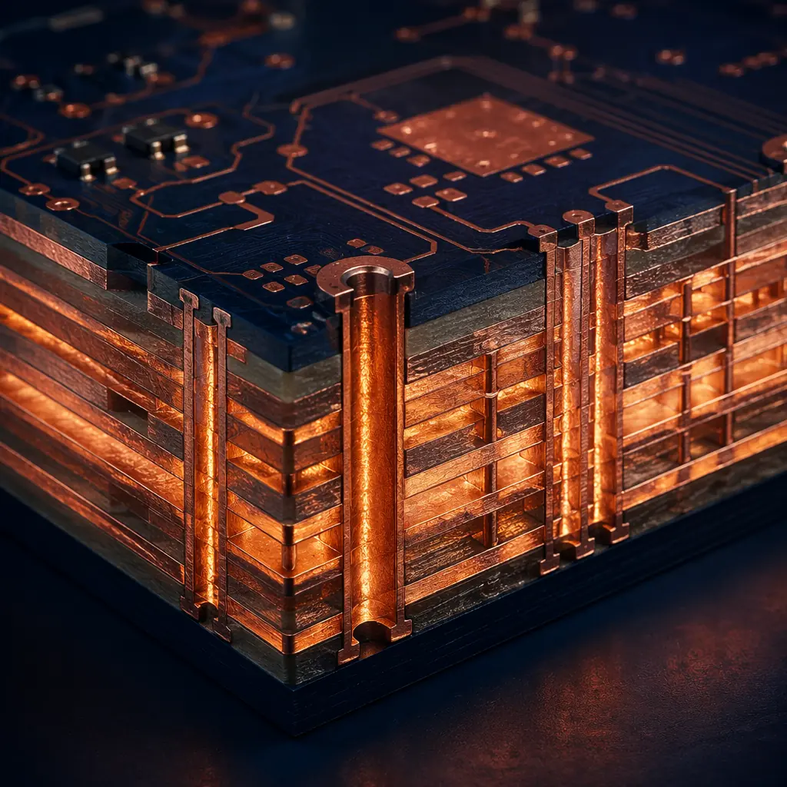
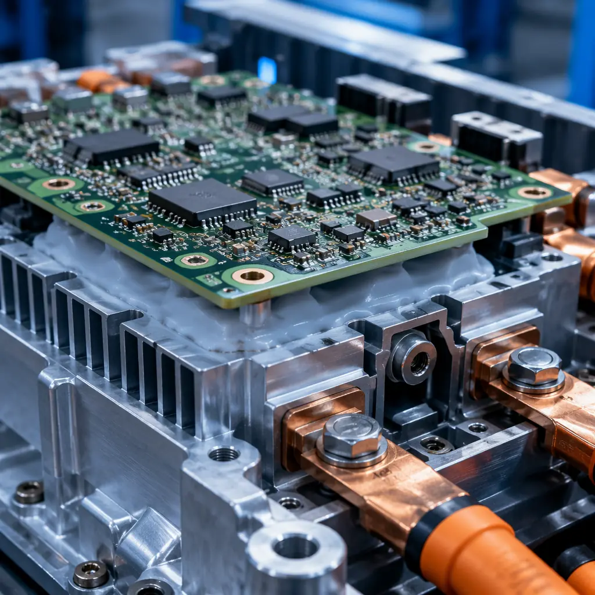

The traction inverter is the single most power-dense electronic module in an electric vehicle. It converts the traction battery's 400-800V DC into the three-phase AC that drives the motor, processing 100-300 kW of power continuously — equivalent to the electrical load of a small office building — inside a package roughly the size of a shoebox. The PCB at the heart of this module must switch silicon carbide (SiC) MOSFETs at 20-50 kHz with edge rates exceeding 50 V/ns, while maintaining galvanic isolation between the high-voltage traction bus and the 12V control circuits, all while surviving 8,000+ thermal cycles from -40°C cold-soak to 150°C junction temperature over the vehicle's 150,000-mile design life. This is not a PCB that tolerates compromise.
Huaxing PCBA manufactures traction inverter PCBs under IATF 16949 certified quality management, with capabilities spanning 12 oz heavy copper, high-Tg laminate inventory (Isola, ITEQ, Shengyi), and 6 kV HiPot testing on every production panel. Our facility processes 8 million solder joints per day across 8 SMT lines and supports the complete automotive qualification chain — from PPAP Level 3 submission through process capability studies (Cpk ≥ 1.67) on critical dimensions. This guide covers the PCB design and manufacturing decisions that determine whether your traction inverter design makes it from prototype to production on schedule and on budget.

What Makes Traction Inverter PCBs Different
A traction inverter PCB is frequently mistaken for "just another power electronics board." The reality is that it combines four extreme requirements that individually are challenging and collectively demand a fundamentally different manufacturing approach than any other automotive PCB:
Simultaneous High Voltage and High Current — Not One or the Other
Most power PCBs handle either high voltage (solar inverter: 1500V DC at 10-30A) or high current (server VRM: 1.2V at 200A). A traction inverter handles both simultaneously — 800V DC bus voltage and 300-600A phase current in the same board area. The DC bus requires 8-12 mm creepage per IEC 60664-1 for reinforced isolation at Pollution Degree 2, while the phase output traces must carry 400A RMS with acceptable temperature rise — a combination that forces creative use of heavy copper inner layers (4-12 oz), slot cuts for creepage extension, and laminated bus bar interfaces.
Sub-5 nH Commutation Loop Inductance — A Layout Problem Measured in Picohenries
SiC MOSFETs switch in 10-30 ns. At 800V and 400A, a commutation loop inductance of just 10 nH generates voltage overshoot of 400V (V = L × di/dt = 10 nH × 400A / 10 ns) — enough to destroy a 1200V-rated device. The PCB power loop — from DC-link capacitor positive terminal → high-side SiC drain → high-side SiC source → low-side SiC drain → low-side SiC source → DC-link capacitor negative terminal — must enclose the minimum possible area, typically achieved with a laminated busbar or 4-layer PCB with power and return planes on adjacent layers separated by only 0.15-0.20 mm of prepreg. See our high-voltage PCB design guide for the complete low-inductance layout methodology.
Gate Drive Signal Integrity at 50 V/ns Slew Rates
A SiC MOSFET gate transitions from 0V to +18V and back in under 30 ns. The gate drive PCB trace between the isolated gate driver IC and the MOSFET gate pin behaves as a transmission line at these edge rates — a trace longer than 25 mm without controlled impedance can ring at 50-100 MHz and falsely trigger the device. Every gate drive trace must be treated as a controlled-impedance transmission line with source termination at the driver, routed over an uninterrupted reference plane. The Kelvin-source connection — a dedicated sense trace from the MOSFET source terminal back to the gate driver — is not optional for SiC designs; without it, the package source inductance (5-15 nH for TO-247-4) couples di/dt noise into the gate drive loop and degrades switching performance by 20-30%.
Partial Discharge Resistance — The Hidden 800V Failure Mode
At DC bus voltages above 500V, partial discharge (PD) in PCB voids becomes a measurable and cumulative degradation mechanism. A microscopic air void in the prepreg between two layers carrying 800V potential difference experiences an electric field exceeding the dielectric strength of air (~3 kV/mm) — and begins to discharge. Each discharge event erodes the surrounding epoxy, growing the void until it bridges the insulation and creates a short circuit. This is not a theoretical concern; it is the root cause of field failures in early 800V inverter designs that used standard FR-4 lamination processes. Traction inverter PCBs require vacuum lamination with documented void content below 0.5% and 100% PD testing at 1.5× rated voltage per IEC 60664-4. For the complete methodology, see our PCB laminate selection guide.
Design Reality: A traction inverter PCB that passes room-temperature functional test with a benchtop DC supply has proven exactly nothing about its production readiness. The failures that derail automotive programs — partial discharge after 500 thermal cycles, barrel cracking in heavy-copper vias, gate drive oscillation under dynamic load — all appear during qualification testing, not benchtop bring-up. Budget 2-3 PCB revisions between first prototype and PPAP submission, not one.
Key Design Requirements for 800V Traction Inverter PCBs
The following checklist covers the non-negotiable design parameters that a production-grade traction inverter PCB must satisfy. These are not "recommendations" — they are the minimum set of requirements that separate a PCB that works on the bench from one that survives automotive qualification.
High-Voltage Isolation: >800V with Reinforced Insulation
Per IEC 60664-1, reinforced insulation at 800V DC working voltage requires 8.0 mm creepage and 5.0 mm clearance for Pollution Degree 2 with Material Group IIIa (CTI 175-399, standard FR-4). If the board operates at Pollution Degree 1 (hermetically sealed or conformally coated), creepage can be reduced to 4.0 mm, but the coating must be qualified for the full thermal cycling range with no cracking or delamination. Slot cuts in the PCB — 2.0 mm minimum width, CNC routed — are the most reliable method to extend creepage path length without consuming excessive board area. Our high-voltage PCB design guide includes a creepage calculator and slot dimensioning tool for your specific working voltage and pollution degree.
Heavy Copper: 4-12 oz for High-Current Power Paths
A 400A RMS phase current requires conductor cross-sections that are impossible with standard 1 oz copper. At 4 oz (140 μm), a trace width of 50 mm is needed for 400A with a 20°C temperature rise — manageable with inner layer power planes. At 6 oz (210 μm), the required width drops to 32 mm. The most space-efficient approach uses multiple heavy copper layers in parallel — for example, three 4 oz inner layers each carrying ~133A with inter-layer stitching vias every 10 mm to ensure current sharing. Heavy copper PCB manufacturing introduces specific challenges: thick copper makes fine-pitch etching difficult (minimum trace/space increases to 0.20/0.20 mm at 4 oz vs. 0.10/0.10 mm at 1 oz), and lamination requires extended press cycles to ensure complete resin fill between thick copper features. See our heavy copper PCB guide for design rules and our copper weight selection guide for trace width calculations.
Thermal Management for 100 kW+ Power Levels
A traction inverter operating at 97% efficiency at 150 kW still dissipates 4.5 kW of heat — roughly 1.5 kW in the SiC modules and 3 kW in the PCB copper losses, DC-link capacitors, and bus bars. The PCB thermal design must address: (a) lateral heat spreading from SiC device footprints to the cooling interface using 4-6 oz copper planes on every available layer, (b) through-plane thermal conductivity enhanced by thermal via arrays with 0.3 mm drill diameter, 0.6 mm pitch, filled and capped for vacuum integrity, and (c) direct-bonded copper (DBC) or insulated metal substrate (IMS) daughter boards for the hottest devices when FR-4 alone cannot meet the junction temperature derating requirement. Our PCB thermal management guide covers via array design, substrate selection, and thermal simulation methodology for power electronics.
Low-Inductance Layout for SiC/GaN Fast Switching
The power loop inductance target for a SiC half-bridge switching at 20-50 kHz is ≤ 5 nH. Achieving this on a PCB requires: DC-link capacitors placed within 10 mm of the half-bridge, power and return planes on adjacent layers (L2-L3 or L3-L4) with ≤ 0.2 mm dielectric thickness, and a laminated busbar structure where positive and negative DC planes are separated by a thin layer of high-dielectric-strength prepreg. For GaN devices switching above 100 kHz, the loop inductance requirement tightens to ≤ 1 nH, which often forces a move to a ceramic substrate (Al₂O₃ or AlN) with direct-bonded copper for the power stage, connected to the FR-4 control board via a low-inductance interconnect.
Partial Discharge Resistance — CTI ≥ 600V Laminate Selection
Standard FR-4 has a Comparative Tracking Index (CTI) of 175-249V (Material Group IIIa). For 800V traction applications, a laminate with CTI ≥ 600V (Material Group I) is strongly recommended — materials like Isola IS420 or ITEQ IT-968G provide both high CTI and high Tg (≥ 180°C). The higher CTI provides margin against surface tracking and carbonization under combined voltage, temperature, humidity, and contamination stress. The cost adder for CTI ≥ 600V laminate is approximately 30-50% versus standard high-Tg FR-4, but this is a fraction of the cost of a field failure in a traction inverter that strands the vehicle. For the complete laminate comparison, see our PCB laminate selection guide.
DC-Link Capacitor Integration: Low-ESL Bus Interface
The DC-link capacitor bank — typically 500-1000 μF of film capacitors rated for 900-1100V — must connect to the half-bridge PCB with the lowest possible series inductance. Many designs use press-fit or screw-terminal capacitor connections directly to the PCB, which requires: plated through-holes with ≥ 25 μm copper barrel thickness to handle the mechanical load of large capacitor terminals, copper balancing on symmetrical layers to prevent board warpage during reflow, and local stiffener ribs in the PCB layout (wider copper pours around capacitor mounting points) to prevent flexing during vehicle vibration. For press-fit design rules, see our press-fit technology guide.

Material Selection for 800V Systems
The laminate choice for a traction inverter PCB is not a single answer — different sections of the board serve different functions and may benefit from different materials. The following comparison covers the four material families relevant to traction inverter design, from cost-optimized high-Tg FR-4 to ceramic substrates for the highest power density:
| Material | Tg (°C) | CTI (V) | Thermal Conductivity (W/m·K) | Best Use in Traction Inverter | Relative Cost |
|---|---|---|---|---|---|
| Standard High-Tg FR-4 (Shengyi S1000-2, ITEQ IT-180A) | 170-180 | 175-249 | 0.3-0.4 | Control & gate drive layers (low-voltage section), 8-12 layer main boards for ≤ 400V bus | 1.0× |
| High-CTI FR-4 (Isola IS420, ITEQ IT-968G) | 180-200 | ≥ 600 | 0.4-0.5 | 800V power layers requiring surface tracking resistance; reduces creepage distance requirement per IEC 60664 | 1.3-1.5× |
| Ceramic-Filled Hydrocarbon (Rogers RO4350B, Isola TerraGreen) | >280 (Td) | ≥ 600 | 0.6-0.8 | Hybrid stackup: RF laminate on power switching layers for controlled Dk at high frequency + FR-4 on control layers | 3-5× |
| Insulated Metal Substrate — Aluminum (Bergquist HT-07006, Laird Tlam) | 150 (dielectric) | N/A (single-layer) | 1.5-3.0 | SiC/GaN power stage daughter boards where direct heatsink mounting is required; single or double-sided | 2-3× |
| Direct-Bonded Copper — Al₂O₃ / AlN Ceramic | N/A (ceramic) | >600 | 24-170 | Highest power density SiC modules with direct die-attach; CTE matched to SiC (AlN: 4.5 ppm/°C vs SiC: 4.0 ppm/°C) | 5-10× |
Procurement Decision Framework: For 400V traction inverters (entry-level EVs, hybrid vehicles), a high-Tg FR-4 with 4-6 oz copper and CTI ≥ 600V on the power layers is typically sufficient and cost-optimal. For 800V systems (premium EVs, performance vehicles), the power stage layers should use a ceramic-filled hydrocarbon or IMS substrate, with the control section built on high-CTI FR-4. The hybrid stackup adds 40-60% to the bare PCB cost but eliminates the primary field failure modes: partial discharge in FR-4 voids and tracking across polluted surfaces. Given that a traction inverter field failure costs $3,000-8,000 in warranty replacement (parts + labor + tow + brand damage), the laminate cost adder amortizes in approximately 200 units.
Manufacturing Challenges in Traction Inverter PCB Production
Designing a traction inverter PCB that works on paper is the first 30% of the problem. The remaining 70% is manufacturing execution — processes that must be controlled to tolerances that general-purpose PCB fabricators cannot achieve. Procurement managers should understand which manufacturing steps are the yield limiters and what to verify during supplier qualification.
Thick Copper Plating Uniformity Across Panel
Electroplating 4-12 oz copper uniformly across an 18×24" panel is fundamentally difficult — the current density varies with distance from the panel edge and anode placement, creating copper thickness variation of ±15-20% if not actively managed. For a 6 oz target, that means some areas receive 5.1 oz and others 6.9 oz — enough variation that the thinner areas may fail current-carrying requirements while the thicker areas violate minimum trace/space design rules after etching. Our plating process uses pulse-reverse rectification with dynamic current profiling to hold thickness uniformity to ±8% across the panel, verified by XRF measurement on every production lot. For design rules on heavy copper, see our heavy copper PCB manufacturing guide.
Thermal Via Arrays — Fill, Cap, and Plate
The thermal via array under a SiC module may contain 100-200 vias in a 20×30 mm area. Each via must be: drilled with ±25 μm positional accuracy, plated with ≥ 25 μm copper in the barrel, filled with thermally conductive epoxy (thermal conductivity ≥ 2.0 W/m·K), and planarized to ±15 μm flatness for reliable SMT solder joint formation. One unfilled via under a large power module creates a solder void that becomes a thermal hotspot; one poorly planarized via creates an open solder joint that fails during thermal cycling. Our cross-section lab verifies via fill quality on every production lot — not just qualification samples. For thermal design strategies, consult our PCB thermal management guide.
Press-Fit Pin Reliability for High-Current Interfaces
Many traction inverter designs use press-fit pins for the DC-link capacitor and phase output connections — eliminating solder joints that fatigue under power cycling. The PCB plated through-holes for press-fit must hold finished hole diameter to ±0.05 mm with copper plating thickness of 25-50 μm. A hole that is 0.03 mm undersized causes insertion force spikes that can crack the barrel plating; a hole that is 0.03 mm oversized produces insufficient retention force and an intermittent connection under vibration. Our PCB press-fit technology guide covers the complete design-to-validation workflow for solderless power interconnects.
HiPot Testing at 2× Rated Voltage + 1000V
Per IEC 61800-5-1 (adjustable speed electrical power drive systems), the production HiPot test for a traction inverter PCB must apply DC voltage = 2 × rated voltage + 1000V for 1 second minimum between all high-voltage circuits and chassis ground/chassis-connected low-voltage circuits. For an 800V system, that means 2 × 800 + 1000 = 2600V DC. The leakage current limit during the test is typically ≤ 5 mA. This test must be performed on 100% of production PCBs, not on a sample basis. Our production line integrates automated HiPot testing with data logging for full traceability — every board's test result is recorded by serial number and linked to the production lot.
Supplier Qualification Check: When auditing a PCB supplier for traction inverter production, ask to see their HiPot test station and verify: (a) the voltage ramp rate is ≤ 500 V/s (fast ramp induces transient currents that mask true leakage), (b) the test fixture has guarding to prevent surface leakage along the board edge from contributing to the measurement, and (c) test data is stored by serial number, not discarded after pass/fail. Suppliers who test on a sample basis or cannot produce per-serial-number HiPot data should be disqualified from traction inverter programs.
Why Choose an IATF 16949-Certified Partner
ISO 9001 certification demonstrates that a manufacturer has a documented quality management system. IATF 16949 certification demonstrates that the quality system has been validated against the specific requirements of the automotive industry — including process capability studies (Cpk), production part approval process (PPAP), failure mode and effects analysis (FMEA), and measurement system analysis (MSA). For a traction inverter PCB, the difference between an ISO 9001 supplier and an IATF 16949 supplier is the difference between receiving a Certificate of Conformance and receiving a PPAP Level 3 submission with the following deliverables:
| PPAP Element | What It Contains | Why It Matters for Traction Inverter PCBs |
|---|---|---|
| Design Records | Customer-approved Gerber files, stackup drawing, fabrication notes | Establishes the frozen baseline — any process change requires a new PPAP submission |
| Process Flow Diagram | Every manufacturing step from inner layer imaging through final electrical test | Identifies process steps where characteristics are created — the basis for the Control Plan |
| Process FMEA | Failure modes, effects, severity/occurrence/detection ratings for each process step | Documents what can go wrong in thick copper plating, lamination, and HiPot test — and how it is prevented |
| Control Plan | Control method, sample size, and frequency for every critical characteristic | Defines that copper thickness is measured by XRF every 20 panels, that HiPot is 100%, and that microsection is per-lot |
| Measurement System Analysis | Gauge R&R studies on critical measurement equipment | Proves that the XRF, CMM, and HiPot testers produce repeatable and reproducible results within acceptable variation |
| Dimensional Results | CMM data on every critical dimension on the drawing | Proves that the production process holds dimensional tolerances — not just on the easiest features |
| Material / Performance Test Results | Tg by DSC/TMA, CTE, T260/T288, peel strength, ionic contamination | Proves that the laminate lot meets the specification and that the finished PCB meets cleanliness requirements |
| Initial Process Capability Study | Cpk ≥ 1.67 on critical characteristics from a statistically significant sample | Proves the process is capable of meeting specification with margin — not just that this particular lot happened to pass |
| Part Submission Warrant | Signed warrant declaring that the submission meets all requirements | The legal and contractual document that closes the PPAP package |
For procurement managers new to automotive PCB qualification, the PPAP process may appear burdensome. In practice, it is the most effective tool available for preventing the scenario where a PCB supplier passes an initial audit with capability samples and then ships production lots with degraded quality. The process capability data (Cpk) is particularly valuable — it tells you not just that the supplier CAN produce a good board, but that their process reliably produces good boards over time. Our EV BMS PCB design guide covers the qualification framework from the battery management perspective, and our cross-section report guide helps interpret the microsection evidence in a PPAP submission.
Summary: From Design to Production — The Traction Inverter PCB Roadmap
The PCB inside an EV traction inverter is among the most demanding boards in the automotive electronics portfolio — combining 800V high-voltage isolation, 400A+ heavy copper current paths, sub-5 nH low-inductance power loops, and partial discharge resistance in a single design. The cost of getting this PCB wrong is not measured in the $30-80 unit price of the bare board; it is measured in the cost of a delayed SOP, a failed qualification test, or a field failure that strands a customer's vehicle and triggers a warranty claim.
The key decisions that determine whether your traction inverter PCB program succeeds on schedule:
Laminate Selection: CTI ≥ 600V on Power Layers
Don't negotiate this specification for 800V designs. The $15-25 per-panel adder for high-CTI laminate is the cheapest insurance against surface tracking failures during the 85°C/85% RH biased humidity test. Standard high-Tg FR-4 with CTI 175-249V will pass initial electrical test and fail during environmental qualification — when the cost of a board re-spin is $50,000-150,000 in engineering time and schedule delay. See our PCB laminate selection guide for the complete decision tree.
Supplier Selection: Engage the Production Supplier During DV, Not PV
The most common traction inverter PCB program delay is caused by transitioning from a quick-turn prototype supplier (used during Design Validation) to a production supplier (engaged at Process Validation). The prototype supplier's processes are not representative of the production supplier's — so the PV build is effectively a first-article build with a new supplier, introducing 6-8 weeks of unexpected process development. Engage your IATF 16949 production supplier during the DV phase, even if at higher unit cost for the low-volume DV build. The NRE savings from using a cut-rate prototype house will be consumed 3-5× over by the schedule delay of re-qualifying with the production supplier at PV.
Testing: Demand 100% HiPot and Per-Serial-Number Traceability
A sample-based HiPot test plan for an 800V traction inverter PCB is a statistical guarantee that some number of boards with latent insulation defects will reach your assembly line and pass functional test — only to fail during burn-in or early field operation. 100% HiPot testing at 2× rated voltage + 1000V with data logging per serial number is not a cost adder; it is the minimum viable quality assurance plan for a safety-critical high-voltage PCB.
At Huaxing PCBA, we manufacture traction inverter PCBs under IATF 16949 certified quality management with in-house heavy copper capability up to 12 oz, high-CTI laminate inventory (Isola IS420, ITEQ IT-968G), vacuum lamination for partial discharge resistance, and 100% HiPot testing with full serial-number traceability. Our engineering team has supported PPAP Level 3 submissions for Tier-1 EV powertrain suppliers and understands the specific challenges of scaling traction inverter PCBs from prototype to 50,000+ units per year. Read our EV BMS PCB design guide for the battery-side complement to this article, or submit your Gerber files and stackup for a same-day DFM review with material recommendations and a PPAP-ready production timeline.